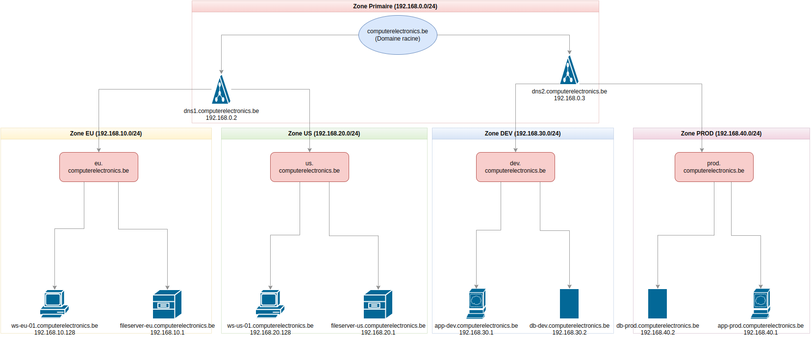

Chapitre 2: Installation de Windows Server 2022 sur VirtualBox
🧭 Navigation du Cours
⏮️ Chapitre Précédent: Introduction | 🏠 Retour au Syllabus | ⏭️ Chapitre Suivant: DNS
📚 Dans ce guide:
- 🛠️ Prérequis
- Installation de VirtualBox
- Téléchargement de Windows Server
- 🖥️ Configuration de VirtualBox
- Création de la VM
- Paramètres réseau
- 🔩 Installation de Windows Server
- Étapes d'installation
- Configuration initiale
🏑 Objectifs
À la fin de ce guide, vous aurez : 1. Une machine virtuelle VirtualBox fonctionnelle 2. Windows Server 2022 installé et configuré 3. Un environnement prêt pour l'installation d'Active Directory
1. 🛠️ Prérequis
💾 Installation de VirtualBox
Important
Si VirtualBox est déjà installé, passez à la section suivante
Telechargez VirtualBox sur le site officiel : https://www.virtualbox.org/wiki/Downloads et suivez les instructions d'installation.
- ✅ Acceptez les termes de la licence lors de l'installation.
Problème potentiel sur Linux
Dans certaines configurations on peut avoir de problèmes pendant l'installation des machines virtuelles Windows.
Source : https://askubuntu.com/questions/705720/virtualbox-kernel-driver-not-installed-error-despite-running-sbin-vboxconfig
sudo /usr/lib/virtualbox/vboxdrv.sh setup
Solution alternative
Si la commande ne fonctionne pas, on doit installer gcc-12
💾 Téléchargement de Windows Server 2022
Important
Si les images sont déjà téléchargées, passez à la section suivante
💡 Pour débutants: Même processus que dans le Chapitre 1, mais cette fois pour VirtualBox !
- Visitez le Centre d'évaluation Microsoft
- Téléchargez le fichier ISO de Windows Server 2022 (version d'évaluation 180 jours)
- Enregistrez le fichier ISO dans un emplacement facilement accessible
2. 🖥️ Création de la Machine Virtuelle
⚙️ Configuration de Base
Configuration de la machine virtuelle
- Ouvrez VirtualBox
- Cliquez sur "Nouvelle"
- Configurez les paramètres de base :
| Paramètre | Valeur |
|---|---|
| Nom | Serveur1 (par exemple) |
| Type de disque | VDI (Image disque VirtualBox) |
| Image ISO | Fichier Windows Server |
| Type | Microsoft Windows |
| Installation | ⚠️ Cochez Skip Unattended Installation |
Configuration matérielle :
| Composant | Spécification |
|---|---|
| RAM | 4096 Mo (4 Go) |
| Processeurs | 2 processeurs |
| Disque dur | 50 Go |
✅ Appuyez sur Finish !
Convention de nommage
M1 = Machine 1 (si vous créez plus tard M2, M3...)
⚙️ Paramètres Additionnels
Paramètres additionnels
-
Sélectionnez la VM et cliquez sur "Paramètres"
-
Système :
-
Onglet Processeur : 2 processeurs minimum
-
Affichage :
- Mémoire vidéo : 128 Mo
-
Activer l'Accélération 3D
-
Réseau :
- Adaptateur 1 (par défaut) : Changer NAT par réseau interne (nécessaire pour AD)
- Ajoutez un deuxième adaptateur de réseau (éteindre la machine) et choisissez accès pont pour l'accès Internet
3. 💻 Installation de Windows Server 2022
Installation de Windows Server 2022
-
Démarrez la machine virtuelle
-
Configuration initiale :
- Sélectionnez la langue (Français, clavier Belge)
-
Cliquez sur Installer maintenant
-
Sélection de l'édition :
- Windows Server 2022 Standard (Expérience Desktop)
-
Cliquez sur "Suivant"
-
Acceptez les termes de la licence
-
Choisissez "Personnalisé : Installer Windows uniquement (avancé)"
-
Sélectionnez l'espace non alloué et cliquez sur "Suivant"
-
Attendez que l'installation se termine
-
Configuration administrateur :
- Mot de passe : Password1! (standard pour nos labos)
-
⚠️ Notez ce mot de passe quelque part
-
Attendez l'écran de login administrateur
-
Utilisez l'option Ctrl + Alt + Suppr via la barre de menu de la fenêtre de la machine virtuelle dans VirtualBox (pas la barre de VirtualBox)
⚙️ Post-Installation
Configuration initiale requise :
- 🔄 Installation des mises à jour Windows
- 🔁 Redémarrage si nécessaire
💻 Console de Gestion
🖥️ Console de configuration des rôles et caractéristiques :
Nous travaillerons sur un sous-ensemble de cette structure de réseau:
Schéma de l'infrastructure

Configuration du nom du serveur
- Ouvrez le Gestionnaire de serveur > Serveur local
- Sélectionnez le nom actuel
- Cliquez sur "Modifier"
- Nom :
dns1 - Suffixe DNS :
maxtec.be
Pourquoi maxtec.be ?
C'est notre entreprise fictive d'exemple
- Cliquez sur "OK"
- Redémarrez le serveur
Le serveur aura maintenant le nom complet (FQDN) : dns1.maxtec.be
Note
Vous pouvez aussi accéder au nom via sysdm.cpl
4. 💻 Machines Clientes Windows 10
🖥️ Vue d'ensemble
Nous devons créer des machines virtuelles clientes pour simuler notre environnement d'entreprise.
📁 Objectif des VM Clientes
Chaque département a des besoins spécifiques : - La Comptabilité a besoin d'accéder aux logiciels financiers - Les RH doivent gérer les dossiers du personnel - Les Ventes utilisent des applications commerciales
Objectif
Nous allons créer deux machines virtuelles Windows 10 pour simuler :
Supossons qu'on a deux départements pour le moment:
- 💰 Comptabilité : accès aux dossiers financiers
- 👥 RH : accès aux dossiers du personnel
Note importante
Le but est de simuler qu'on a une machine pour chaque département. On peut créer autant de machines qu'on veut (bien qu'on ne pourra pas lancer toutes au même temps !)
💻 Installation de Windows 10
Paramètres de la machine virtuelle
| Paramètre | Valeur |
|---|---|
| Nom | Client1 (pour le premier client) |
| Génération | 2 (64 bits) |
| Mémoire | 4 GB |
| Réseau | Adaptateur 1 : réseau interne Adaptateur 2 : accès pont (Internet) |
| Disque | 30 GB |
| ISO | Windows 10 |
Installation initiale
- Langue : Français (Belge)
- Version : Windows 10 Pro
- Mode : Installation personnalisée
- Compte :
clark.kent/Password1!
Configuration post-installation
- Mises à jour Windows
- Nom standardisé pour l'ordinateur
💻 Exercice 1 : Deuxième Machine Cliente
Exercice 1
Créez une nouvelle VM Windows 10 avec :
- 🎮 Nom VM :
Client2 - 👤 Compte : peter.parker / Password1!
- 💽 Hardware identique à la première machine
🖥️ Exercice 2 : Serveur Secondaire
Exercice 2
Créez un nouveau serveur Windows Server 2022 :
- 🌐 Nom du serveur (FQDN) :
dns2.maxtec.be - 💻 Suivez la même procédure que pour le premier serveur
🚀 Prochaine étape:
Vous êtes maintenant prêt(e) pour le Chapitre 3: Configuration DNS
🧭 Navigation
⏮️ Chapitre Précédent: Introduction | 🏠 Retour au Syllabus | ⏭️ Chapitre 3: DNS